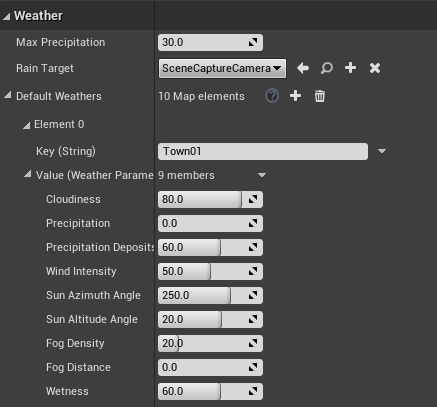
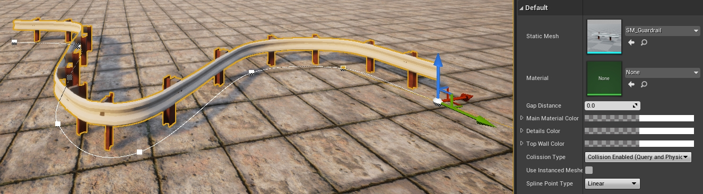
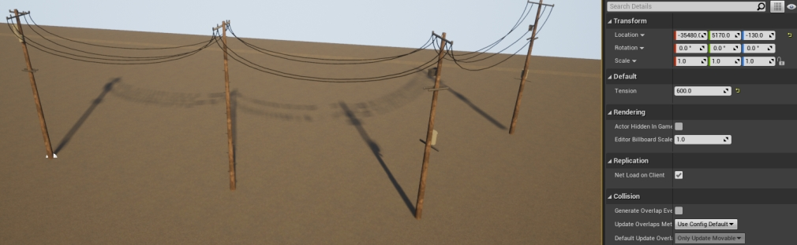
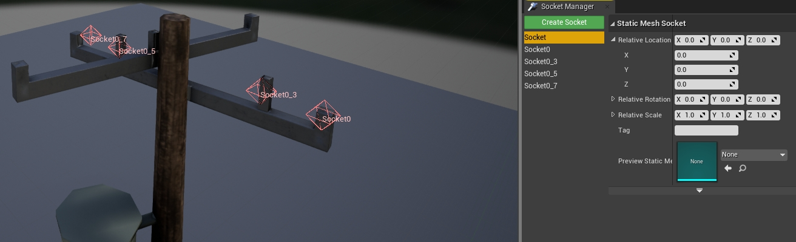

Customizing maps: Weather and Landscape
CARLA provides several blueprints to help ease the creation of default weather settings for your maps and to populate the lanscape with serial meshes such as street lights, power lines, etc.
This guide will explain where each one of these blueprints are located and how to use and configure them.
Important
This tutorial only applies to users that work with a build from source, and have access to the Unreal Editor.
Weather customization
This section explains how to experiment with different weather parameters before setting your map's default weather, and once you are happy with the settings, how to configure the default weather parameters for your map.
BP_Sky
The BP_Sky blueprint is neccessary to bring light and weather to your map. It can also be used to test different weather configurations before deciding on your default weather parameters.
It is likely the BP_Sky blueprint will already be loaded in your map. If not you can add it by dragging it into the scene from Content/Carla/Blueprints/Weather.
To try out different weather parameters, go to the Details panel of the BP_Sky actor, and play with the values in the Parameters section.
Important
If more than one BP_Sky blueprint is loaded into the scene, the weather will be duplicated with undesirable results, e.g, having two suns.
BP_Weather
The default weather for your map is defined in the BP_Weather blueprint. This blueprint allows you to set the same parameters as are available through the Python API. These parameters are described here.
To set the default weather for your map:
1. Open the BP_Weather blueprint.
In the Content Browser, navigate to Content/Carla/Blueprints/Weather and double-click on BP_Weather.
2. Add your town.
In the Details panel of the BP_Weather window, go to the Weather section and add your town to the Default Weathers array.
3. Configure your default weather parameters.
For each weather parameter, set your desired value. When you are finished, press Compile then Save and close.

Add serial meshes
There are four blueprints available to add props aligned in one direction, e.g., walls, powerlines, street lights. These blueprints use a series of meshes distributed along a Bezier curve. Each one is initialized in the same way:
1. Initialize the series.
Drag the blueprint into the scene. You will see one element standing at the starting point of a Bezier curve with two nodes marking the beginning and ending.
2. Define the path.
Select the direction arrow of the element and press Alt while dragging the element in the direction you want to go. This will create a new element which can be used to define the curve. As you drag, a new mesh will appear either on every node of the curve or every time you press Alt while dragging, depending on the blueprint.
3. Customize the pattern.
The following sections will describe the different customization parameters available to each blueprint.
BP_RepSpline
The BP_RepSpline blueprint is found in Carla/Blueprints/LevelDesign. It is used to add individual elements along a path defined by a Bezier curve.
The serialization is customized via the following values:
- Distance between — Set the distance between elements.
- Offset rotation — Set a fixed rotation for the different axis.
- Random rotation — Set a range of random rotations for the different axis.
- Offset translation — Set a range of random locations along the different axis.
- Max Number of Meshes — Set the maximum amount of elements that will be place between nodes of the curve.
- World aligned ZY — If selected, the elements will be vertically aligned regarding the world axis.
- EndPoint — If selected, an element will be added at the end node of the curve.
- Collision enabled — Set the type of collisions enabled for the meshes.

BP_Spline
The BP_Spline blueprint is found in Carla/Blueprints/LevelDesign. It adds connected elements that strictly follow a path defined by a Bezier curve. The mesh will be warped to fit the path created.
The blueprint can be customized using the following value:
- Gap distance — Add a separation between elements.

BP_Wall
The BP_Wall blueprint is found in Carla/Blueprints/LevelDesign. It adds connected elements along a path defined by a Bezier curve. The mesh will not be warped to fit the curve, but the nodes will be respected.
- Distance between — Set the distance between elements.
- Vertically aligned — If selected, the elements will be vertically aligned regarding the world axis.
- Scale offset — Scale the length of the mesh to round out the connection between elements.

BP_SplinePoweLine
The BP_SplinePoweLine blueprint is found in Carla/Static/Pole/PoweLine. It adds electricity poles along a path defined by a Bezier curve and connects them with power lines.
To provide variety, you can provide the blueprint with an array of powerline meshes to populate the path. To do this:
- Double-click the BP_SplinePoweLine blueprint in the Content Browser.
- In the Details panel, go to the Default section.
- Expand the Array Meshes and add to or change it according to your needs.
- Press Compile, then save and close the window.

To alter the line tension of the power lines:
- Select the blueprint actor in the editor scene and go to the Details panel.
- Go to the Default section.
- Adjust the value in Tension.
0indicates that the lines will be straight.
To increase the amount of wires:
- In the Content Browser, double-click on one of the pole meshes.
- Go to the Socket Manager panel.
- Configure existing sockets or add new ones by clicking Create Socket. Sockets are empty meshes that represent the connection points of the power line. A wire is created form socket to socket between poles.

Important
The amount of sockets and their names should be consistent between poles. Otherwise, visualization issues may arise.
Next steps
Continue customizing your map using the tools and guides below:
- Implement sub-levels in your map.
- Add and configure traffic lights and signs.
- Add buildings with the procedural building tool.
- Customize the road with the road painter tool.
- Customize the landscape with serial meshes.
Once you have finished with the customization, you can generate the pedestrian navigation information.
If you have any questions about the process, then you can ask in the forum.